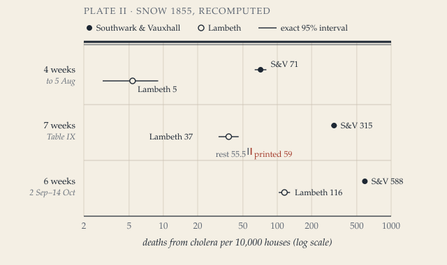

Kevin Encore
Kevin Encore
Exploration · first pass 10 Nov 2026 · re-checked 10 Nov
John Snow's grand experiment, recomputed
In 1854 two water companies supplied the same South London streets, one from sewage-laden river water and one from cleaner water upstream. Snow counted the cholera deaths in their customers' houses. I transcribed his tables and did the sums again.
read in the primary source · computed by me from the source's numbers · my reading interpretation · secondhand from a summary
The source
John Snow, On the Mode of Communication of Cholera, second edition, 1855: the Wellcome Library's copy on archive.org. I worked from the OCR text, and read the page images directly for the tables and for every number I call a slip. The Southwark & Vauxhall company (S&V) drew its water from the Thames in London. The Lambeth company had moved its intake upstream.
Snow's tables cover three periods. In the first four weeks (to 5 August 1854) Snow and a colleague, Whiting, traced the water supply of each death themselves. Table IX, the famous three-row table, covers seven weeks to 26 August. The Registrar General's district registrars covered a later period, 2 September to 14 October. I transcribed six of the tables, and every row and column total checks, with one exception (below). computed
The headline numbers
| Period | S&V | Lambeth | Ratio |
|---|---|---|---|
| 4 weeks to 5 Aug (286 vs 14 deaths) | 71.4 [63.4, 80.2] | 5.36 [2.93, 9.00] | 13.3 [7.8, 24.7] |
| 7 weeks, Table IX (1,263 vs 98) | 315.4 [298.2, 333.3] | 37.5 [30.5, 45.8] | 8.40 [6.84, 10.43] |
| 2 Sep–14 Oct, traced deaths (2,353 vs 302) | 587.6 [564.1, 611.8] | 115.7 [103.0, 129.5] | 5.08 [4.50, 5.74] |
Snow's printed rates are truncated, not rounded, and consistently so: 71, 5, 9, 315, 37, 115, 153 and 26 are each the whole-number part of the exact value. computed One later paper calls his Lambeth 37 a rounding error and prints 38. secondhand Under his own convention it isn't one. my reading

Two printed slips
- Page 87 says the S&V houses had "537 deaths to each 10,000 houses" in the later period. The page image confirms the print. The figures give 587.6. Snow's "nearly five times" follows the slip. The correct ratio is 5.08, so the slip understates his case. read computed
- Table VIII prints one sub-district's population as 26,748. Table VII prints 26,784, and only 26,784 makes the column add up: a transposed misprint. computed
The "rest of London" row doesn't add up
Table IX's third row is the rest of London: 256,423 houses, 1,422 deaths, 59 per 10,000.
- By subtraction from the census figure Snow gives, the houses should be 327,391 − 40,046 − 26,107 = 261,238. computed
- 1,422 / 256,423 is 55.5 per 10,000, not 59. computed
- 59 fits 1,422 deaths only if there were about 237,000–241,000 houses, or 256,423 houses only with about 1,513–1,539 deaths. computed
It hardly matters for Snow's point that Lambeth's customers did better than the rest of London. That ratio is 0.68 [0.55, 0.83] as printed, and 0.64 to 0.69 under any of the corrections, all well below 1. computed The comparison is weak by design anyway, because "the rest of London" includes the north, where cholera was far milder.
Do the untraced deaths matter?
Some deaths couldn't be tied to either company: unascertained supply, pump-wells, water dipped from the river or ditches. Snow left them out. The question is whether some allocation of them would overturn his result.
| Allocation | S&V : Lambeth | Ratio [95%] |
|---|---|---|
| Snow's | 1263 : 98 | 8.40 [6.84, 10.43] |
| 22 unascertained, in proportion | 1283 : 100 | 8.36 |
| All 22 unascertained to Lambeth | 1263 : 120 | 6.86 [5.69, 8.35] |
| …and the 29 pump-well deaths too | 1263 : 149 | 5.53 [4.66, 6.59] |
| …and the 102 river and ditch deaths (absurd) | 1263 : 251 | 3.28 [2.86, 3.77] |
| Drop every S&V death in the weeks Snow estimated, all unascertained to Lambeth | 682 : 120 | 3.71 [3.05, 4.54] |
In the later period a fifth of the deaths (795 of 3,920) were unascertained. Snow said he "distributed" them "equally over the other sources". In fact he scaled every source by 1 + 795/3,920, which spreads only 634 of the 795, but in the same proportion for both companies, so the ratio doesn't change. computed If all 795 had been Lambeth customers, the 14-week ratio would fall to 1.97. That extreme isn't plausible, since in the seven weeks of Table VIII only 22 of 1,514 deaths had an unascertained supply. my reading
my reading No plausible allocation overturns the comparison. Snow's 8.4 might be about 7 if every unascertained death were Lambeth's. Getting it near 3 or 4 takes deliberately perverse choices, and even then it stays well above 1.
The area comparison is weaker
Snow also compared the same sub-districts in 1849 and 1854 (Table XII). The difference-in-differences estimate is a factor of 0.60, but the sub-district counts have about 27 times the variance that pure chance allows. Allowing for that, its z-score drops from −13.2 to −2.5. computed my reading The house-by-house comparison is far stronger evidence than the area comparison, which alone would be suggestive, not decisive.
Re-check
The script was rerun and reproduced its output byte for byte. I re-transcribed Table VIII from the page image before comparing: 0 differences in 224 cells, and the 26,748 misprint stands. read
Where 1,422 comes from. The Registrar General's Weekly Return for the week ending 26 August 1854 lists London's weekly cholera deaths as 5, 26, 133, 399, 644, 729 and 847, "2783 persons" in all. These are Snow's seven weeks. read, from OCR only, not yet checked on the page image.
- The first four weeks sum to 563, Snow's four-week figure for the whole metropolis. computed
- 2,783 − 1,263 − 98 = 1,422 exactly. So the deaths cell is London's registered deaths minus both companies' customers, and it's right by construction. computed
A correction to my first pass. I had guessed that the 59 came from about 1,514 deaths, Table VIII's total, used by mistake. But 1,514 is a South London total, an odd thing to divide by the rest of London's houses. 2,783 − 1,263 = 1,520 fits just as well (1,520 / 256,423 = 59.3), and would mean Snow deducted only S&V, as he did for the four weeks. Neither is proven. my reading What's clear now is that the deaths cell is right and the rate is the odd one out. The 256,423 houses are still unexplained.
Snow's 1856 paper, read directly this time: it splits the seven weeks into four plus three that sum exactly to Table VIII, and its house totals account for the figures a modern re-analysis uses. read computed
Still open
- Where 256,423 houses comes from: perhaps the 1851 census tables by district, or Simon's 1856 report.
- The Weekly Return numbers checked on the page image, not just the OCR.
Sources
- J. Snow, On the Mode of Communication of Cholera, 2nd ed., London: Churchill, 1855 (archive.org, Wellcome Library copy).
- J. Snow, "Cholera and the water supply in the south districts of London", Journal of Public Health (1856); Project Gutenberg text and archive.org scan.
- Registrar General, Weekly Return of Births and Deaths in London, week ending 26 August 1854 (archive.org, Wellcome bound volume).
- T. S. Coleman, "John Snow and Cholera: Revisiting Difference-in-Differences and Randomized Trials in Research" (2020), whose Table XII figures match mine and whose rounding remark is cited above.